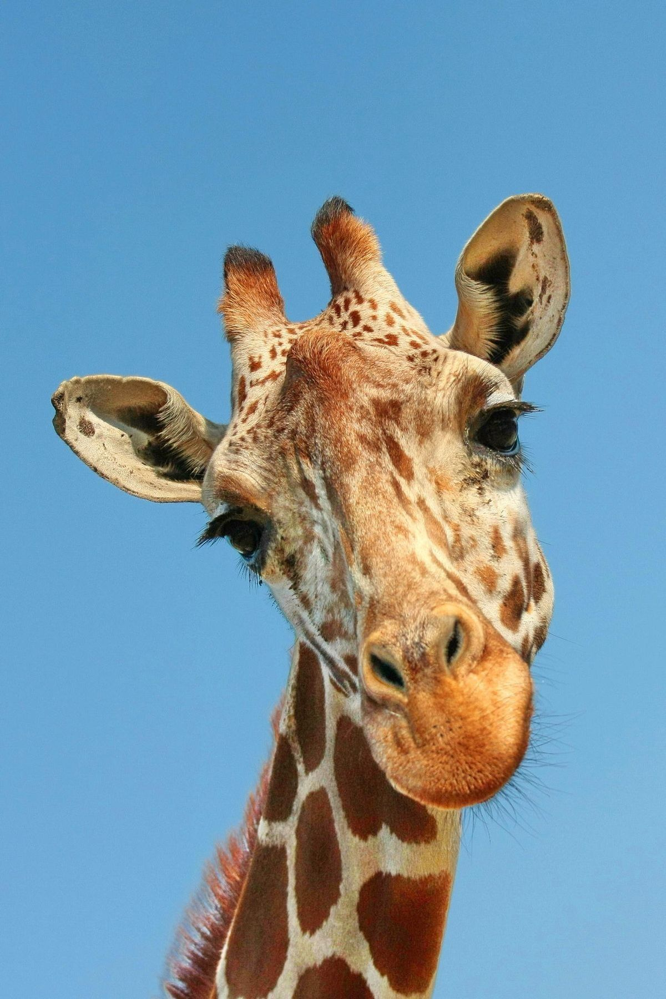
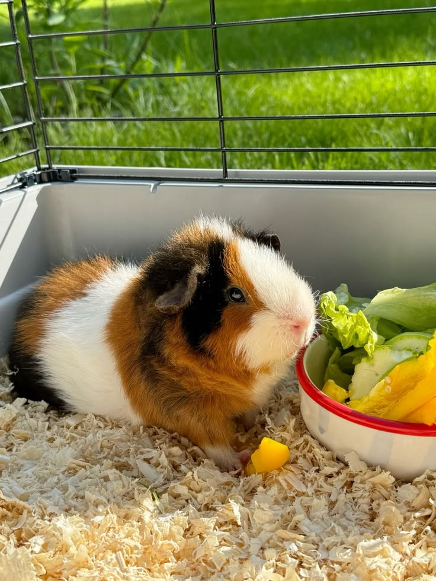
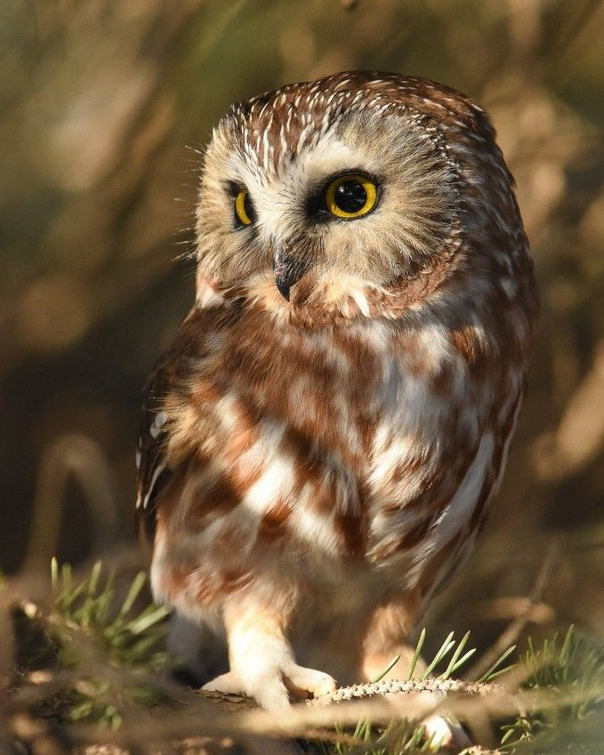
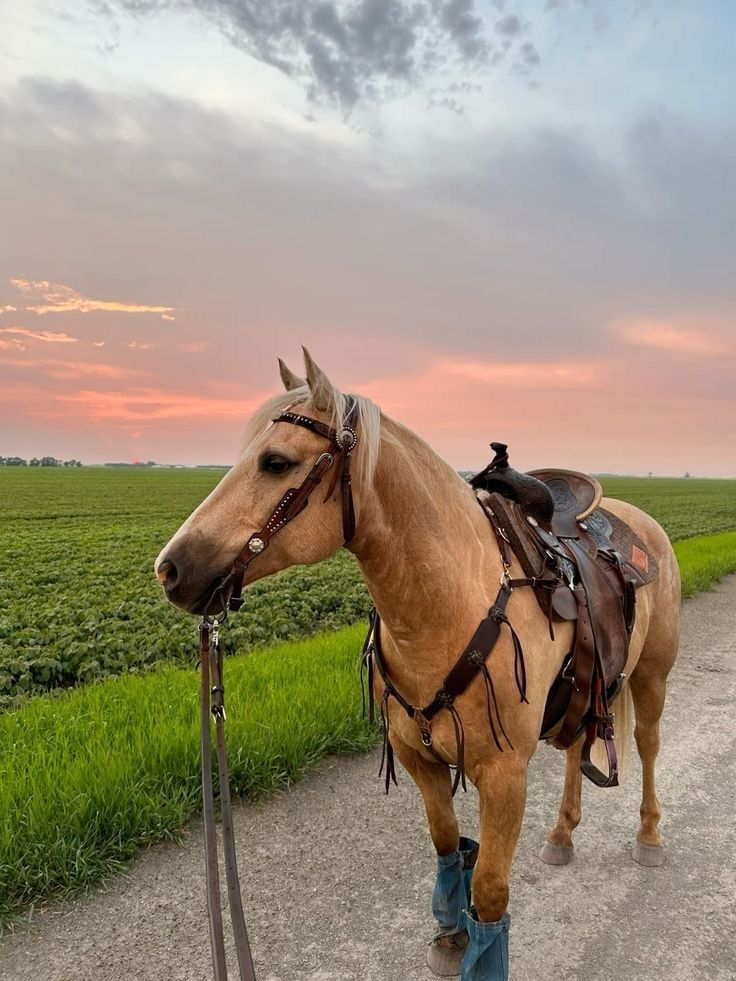
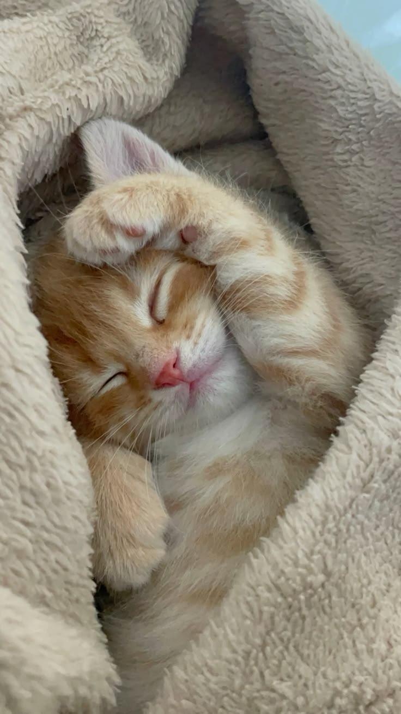
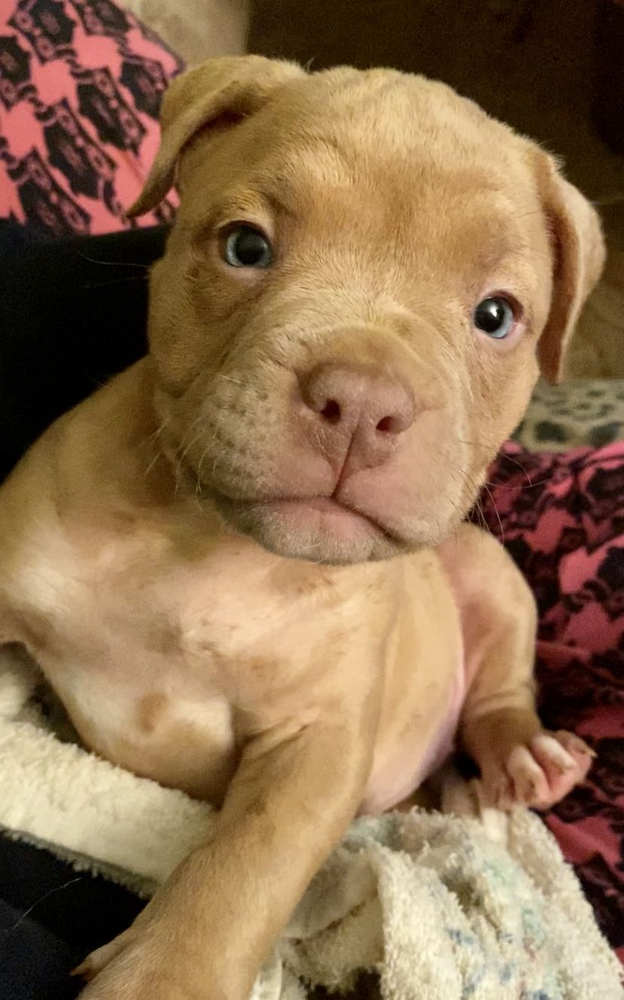
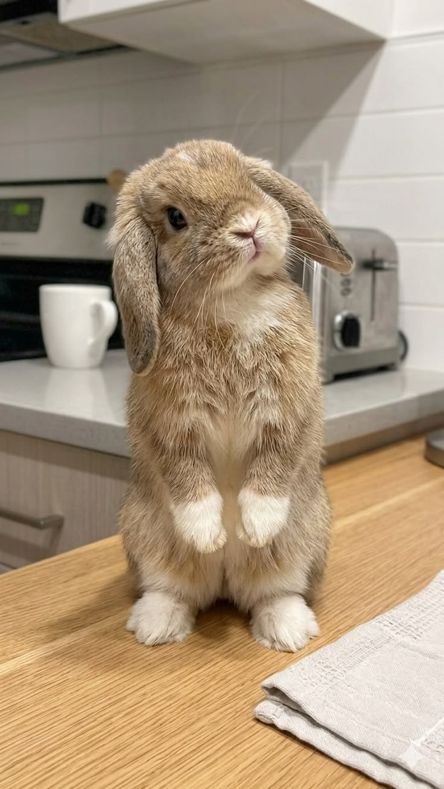
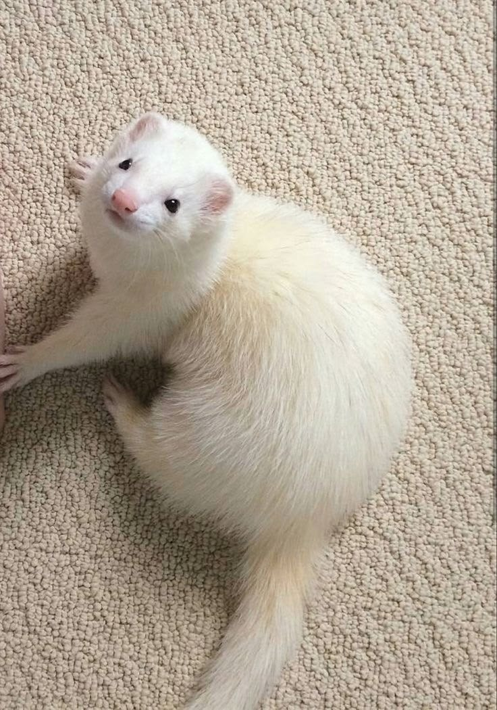
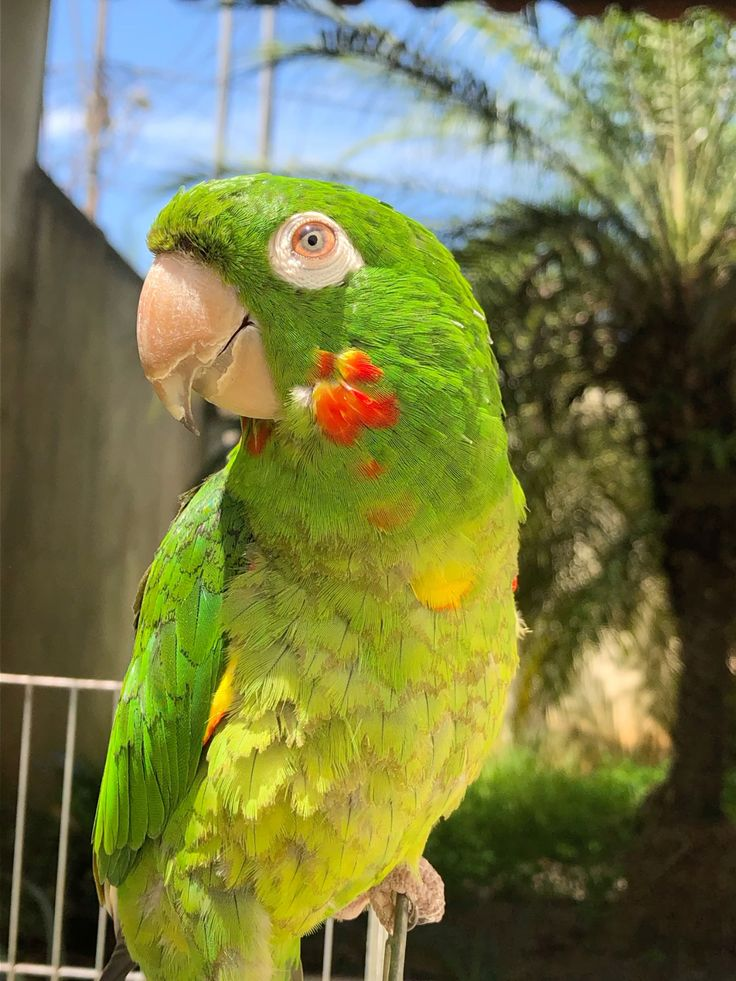
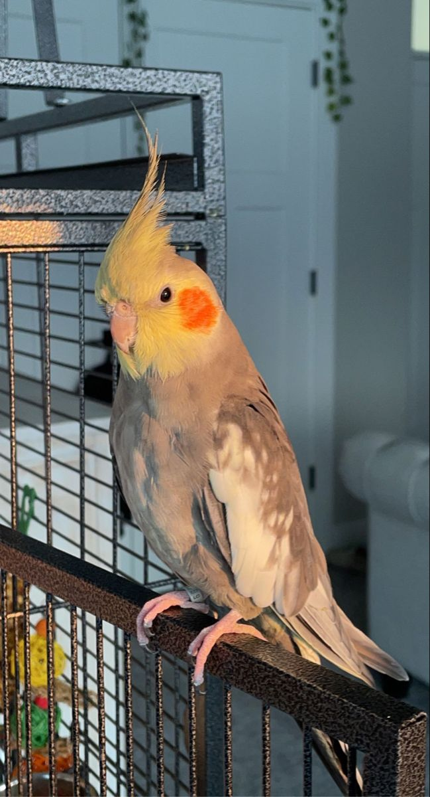

Apesar de eu ter colocado no top 10, que foi uma escolha um pouquinho complicada, euainda sim gosto bastante dela.🌼

Acho muito fofo, mas eles dão um tiquinho de trabalho. Como por exemplo, no calor eles sofrem basatnte, ent sempre tem que deixar tudo cuidadinho e limpo, além de prestar muita atenção na saúde deles.

Elas são muito lindas e inteligentes, acho elas uma ave muito bela.🌟

São muito incrivéis, acho muito fofo a forma que eles se conectam com seus donos, além de serem muito docéis. Já andei em alguns, e é muito legal a expêriencia.🌻

Gosto muito, sempre quis ter um, mas por conta da minha alergia, é meio arriscado, mas acho muito fofinho e gosto bastante.🥰

São muito companheiro e amigavéis, digo isso pois tenho 4 cachorras, e elas são muito brincalhonas, apesar de as vezes sair umas brigas.😅

É um animalzinho incrivekmente fofo, muito mesmo, também já tive um coelho, mas infelizmente por conta do calor, meu pai teve que levar ele no sitío da minha avó (mas ele veio a falecer😣).💜

Essa coisa fofinha é muito companheira, dorminhoca e comilona. Mas eles acabam não durando por muito tempo, claro, se não for bem cuidado. Já tive um furão quando eu era criança, mas ela (Belinha) faleceu por conta de um câncer, e até hj é a minha maior saudade.💗

A maritaca é uma ave muito carinhosa, mas tem um grande porém, elas gritam muito, chega até doer o ouvido de tão alto. Por incrivél que pareça eu também tenho uma que se chama Juca 🤭. Meu pai resgatou ele do sitío da minha avó (ele e os irmãos bicaram o fio que tinha lá, e acabou pegando fogo, e como a fumaça demorou para aparecer, por conta de ter ocorrido "dentro" do telhado, acabamos só percebendo depois), só conseguimos resgatar ele, gosto muito dele, mas pensa nun bichinho chato viu.🏵️❣️😅

Por fim o top 1, a ave mais docíl e carinhosa de todas, e também muito companheira. Eu tenho uma que se chama neguinha, e ela é meu animalzinho preferido, gosto muitão dela.💗💘🤍